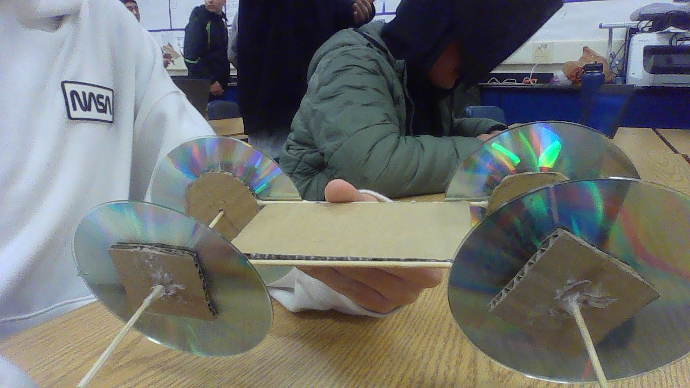
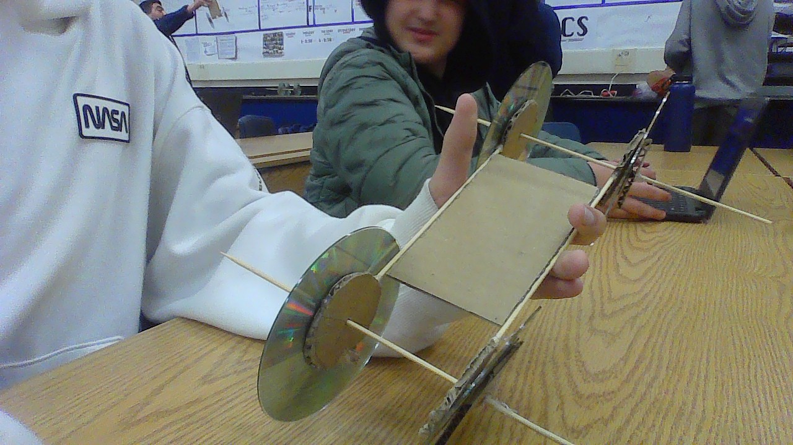
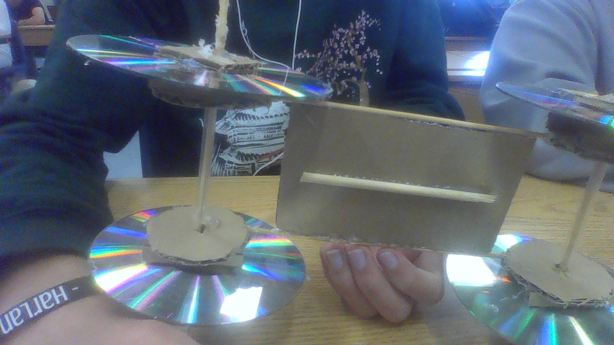
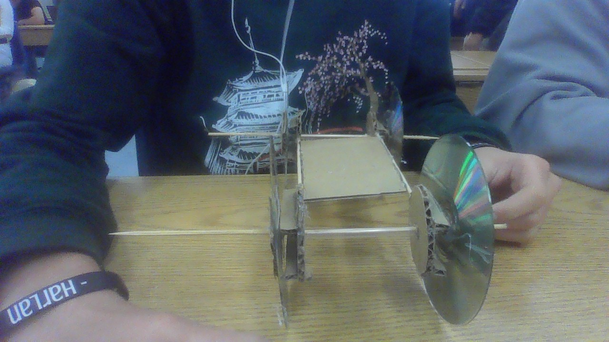
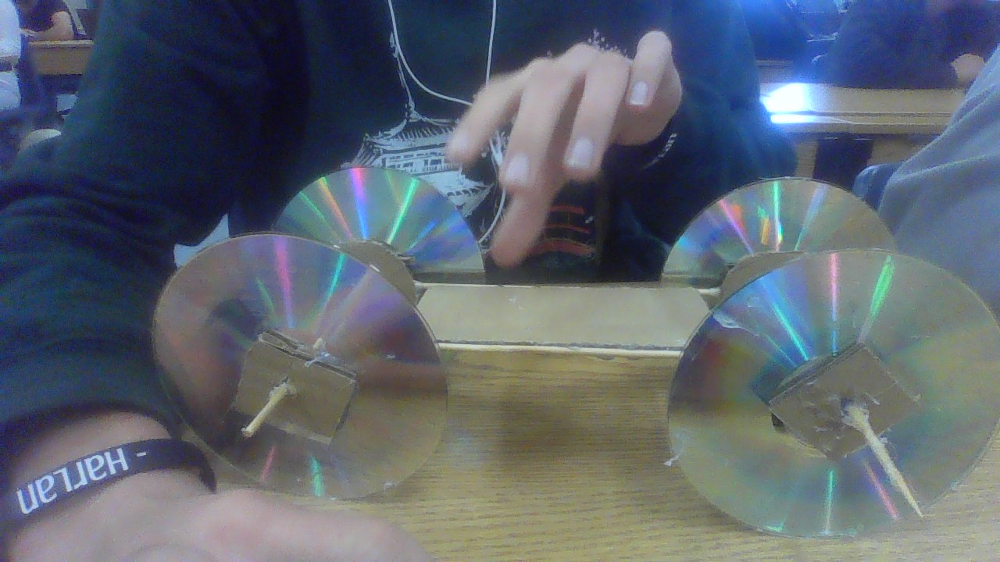
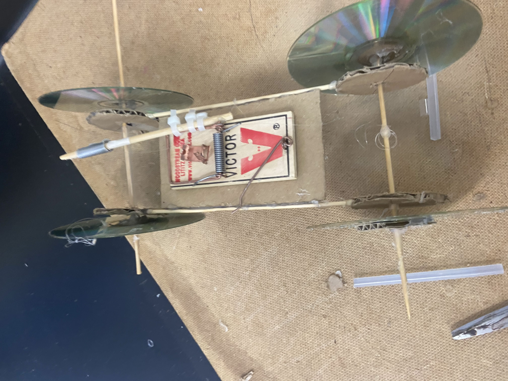
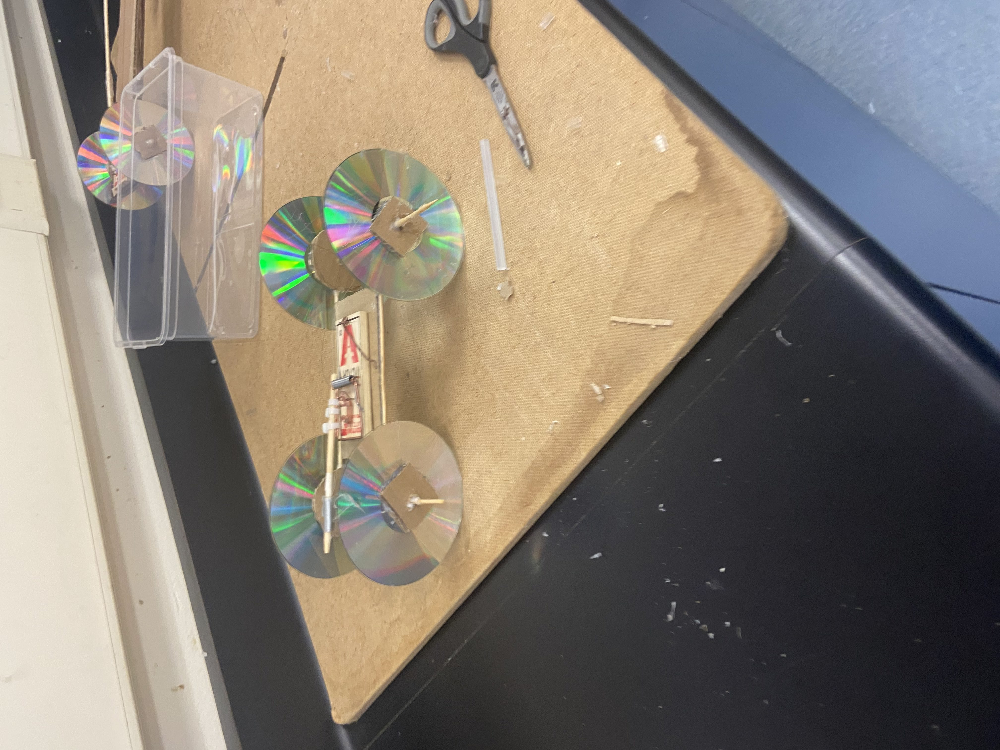
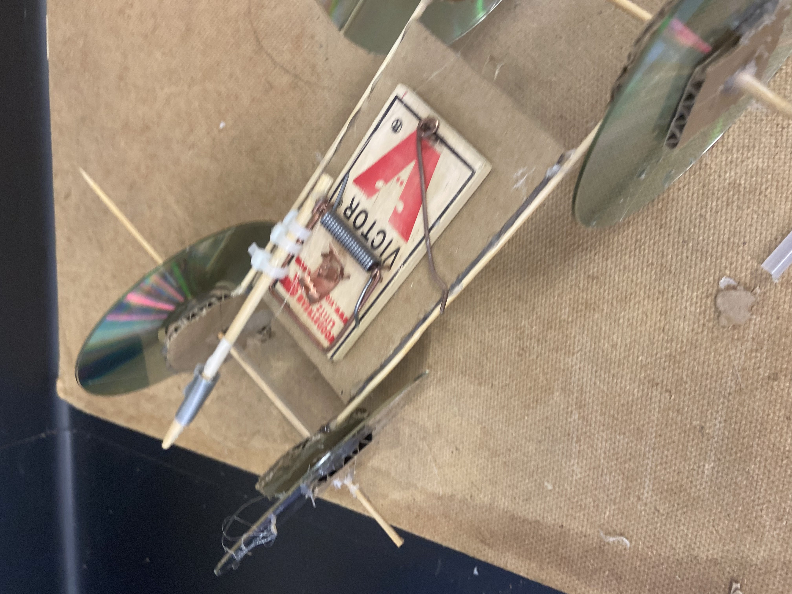

1/19/24 - This is my first journal entry!
in the past week, we've started a new project where we have to make a car. there was a choice between an arduino car and a mousetrap car and i chose the mousetrap one bc mechanical engineering is pretty cool. we also had a quiz which i think i did ok on. we also made oobleck or however its spelled but that was pretty fun.
1/26/24
- This is my second journal entry!this week, we worked a lot on our car project. i didnt get a lot done ngl because i was absent a lot. we just finished the tinkercad though so we are pretty on track.

2/6/23 - This is my second journal entry!
last week, we worked on our mousetrap cars. we got the main design done, but the wheels struggle to spin, which we are planning to fix soon. last weekend, i learned a few new songs on guitar like chandelier by will paquin
 2/13/24
- This is my third journal entry!last week, we had to restart our cars because we messed up the first time. the holes on part of our car weren't big enough so the axle could barely spin. we fixed that with our new car though and are almost done. this week, we can probably make the holes a little bit bigger just to be safe and add the rod and string.
  2/26/24
- This is my fourth journal entry!when we were redesigning our car, the wheels werent straight enough and it made a curve on the car. we werent able to test our first car because it didnt work, but our second car's furthest length was 29 feet. after our first car, we realized the wheels couldnt spin because they were too close to part of the axle and it would get stuck on part of the cardboard. if we were to make a third car, i would connect the axle to the car in a different way so it could spin easier. id also line up the wheels better so it didn't have a curve.
  